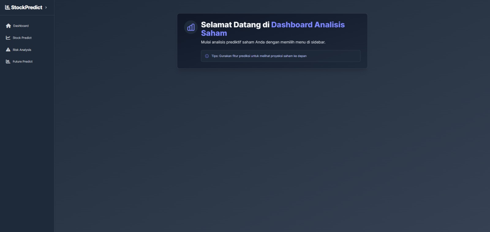
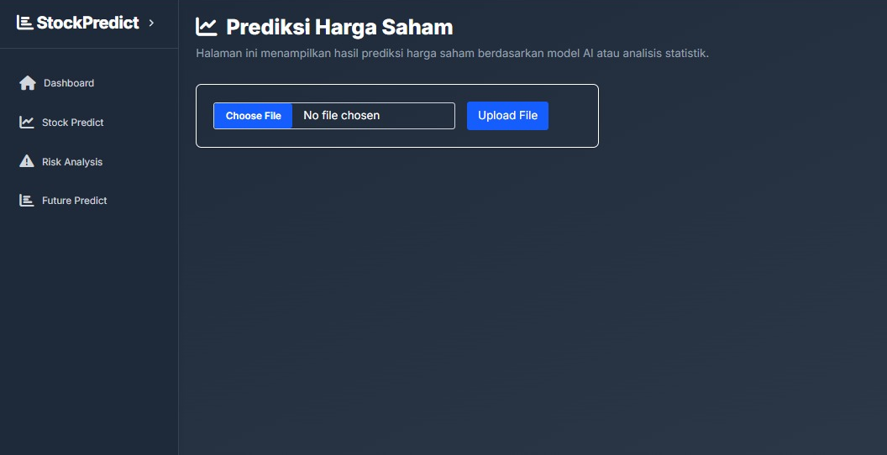
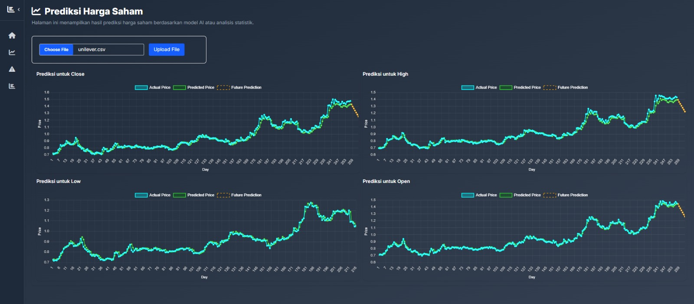
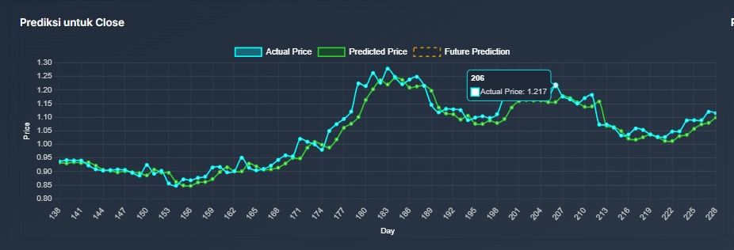
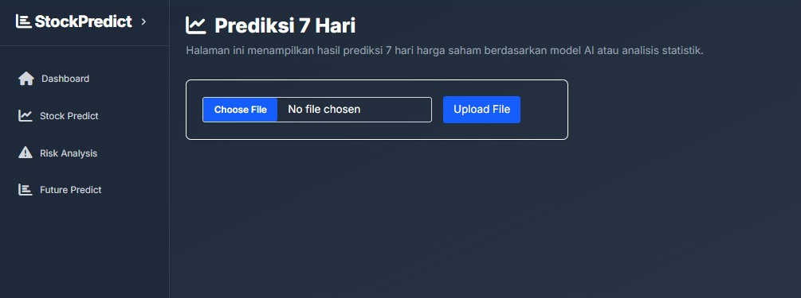
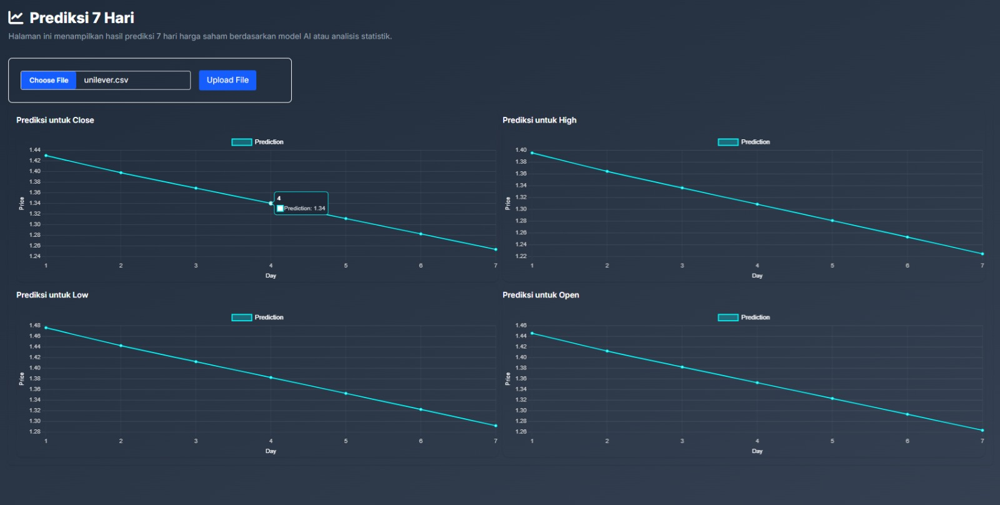
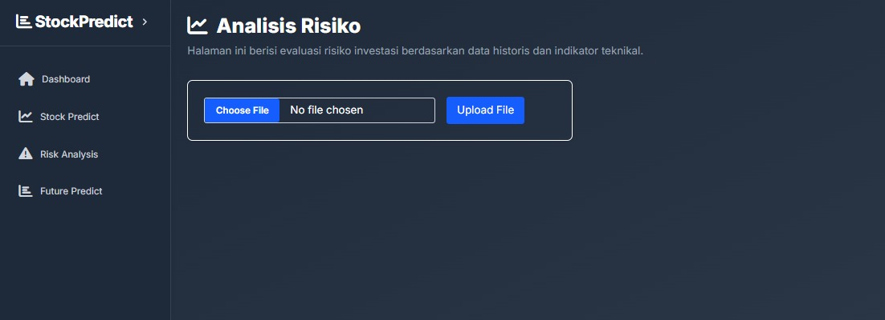
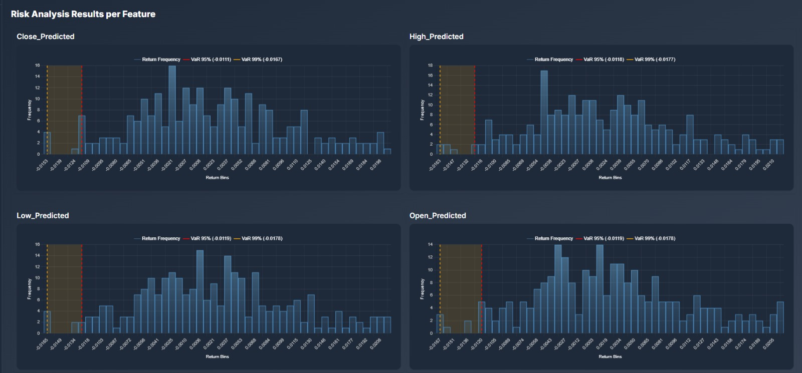
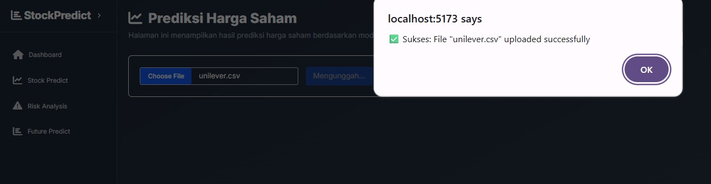
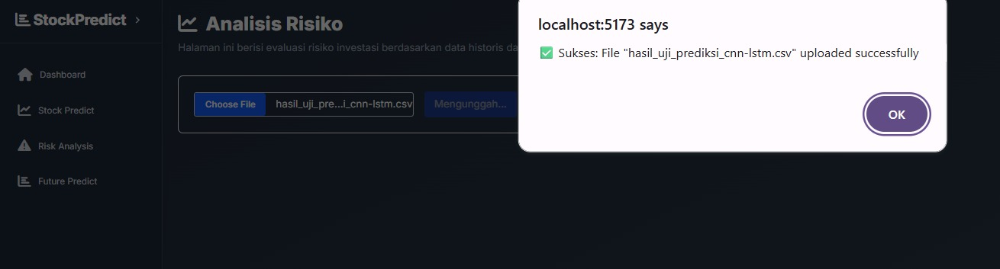

Stock Price Prediction & Risk Analysis
Project Overview
This project is a web-based stock price prediction and investment risk analysis system developed as my thesis project. The system uses a hybrid CNN-LSTM model to predict stock prices based on historical data and applies Value at Risk (VaR) with Cornish-Fisher Expansion to estimate potential investment losses.
The dashboard allows users to upload stock datasets, generate short-term stock price forecasts, compare actual and predicted prices, and analyze investment risk through interactive visualizations.
Objectives
- Develop a web-based dashboard for stock price prediction.
- Implement CNN-LSTM for time-series forecasting using historical stock data.
- Provide 7-day future price prediction for Close, High, Low, and Open prices.
- Analyze potential investment risk using Value at Risk (VaR).
- Present prediction and risk analysis results through interactive charts.
Tools & Technologies
Key Features
1. Dashboard Page
The dashboard page provides an overview of the stock analysis system and guides users to access prediction, risk analysis, and future prediction menus from the sidebar.

Dashboard Overview
2. Stock Price Prediction
Users can upload a stock dataset in CSV format. After the upload process, the system generates prediction visualizations for Close, High, Low, and Open prices by comparing actual prices, predicted prices, and future prediction results.

CSV Upload for Prediction

Prediction Result Charts

Prediction Result Charts Interactive
3. Future Prediction
The system provides a 7-day stock price forecast. The output is displayed through line charts for Close, High, Low, and Open price predictions, helping users understand possible short-term price movements.

Future Prediction Upload

7-Day Prediction Result
4. Risk Analysis
This feature evaluates investment risk based on predicted stock returns. The system calculates Value at Risk (VaR) at 95% and 99% confidence levels and visualizes the risk distribution for each predicted feature.

Risk Analysis Upload

VaR Risk Visualization
5. Upload Notification
The system provides upload status notifications to inform users when a file has been successfully uploaded and processed.

Prediction Upload Success

Risk Analysis Upload Success
Results & Impact
- Built a dashboard that supports stock price forecasting and investment risk analysis.
- Implemented CNN-LSTM to capture historical stock price patterns.
- Displayed prediction results through clear and interactive visualizations.
- Provided risk estimation using VaR 95% and VaR 99% to support investment decision-making.
- Improved accessibility of stock prediction analysis through a web-based interface.
GitHub Repository
Source code and project implementation are available on GitHub.
View Source Code on GitHub →